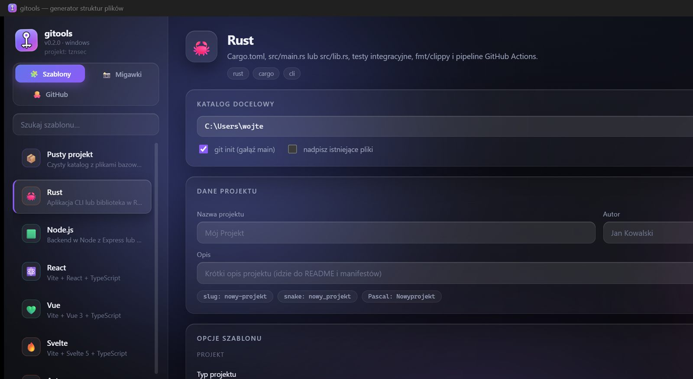
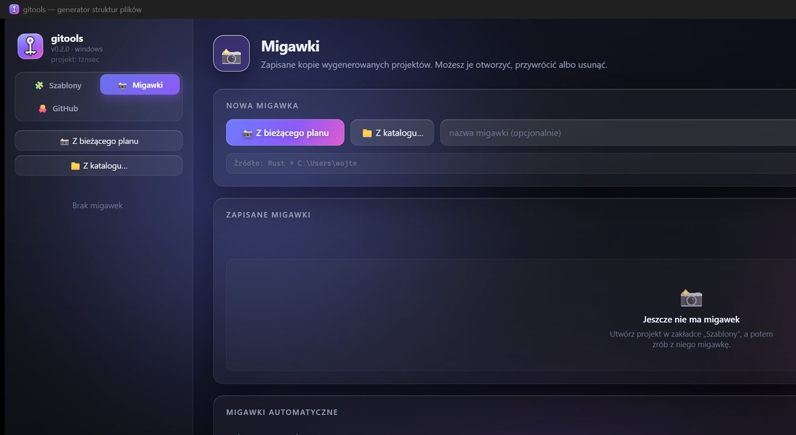
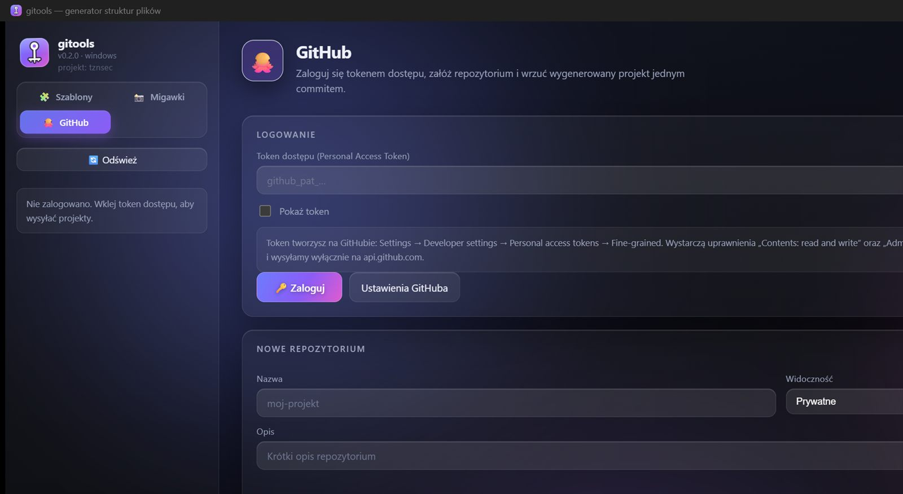

🧩
13 szablonów
Rust, Node.js, React, Vue, Svelte, Astro, Electron, Tauri, .NET, Flutter, Python, Go i pusty katalog bazowy. Każdy z własnymi opcjami.
Generator struktur plików — od szablonu do repozytorium.
Projekt open source autorstwa tznsec · wersja 0.2.0 · MIT
Możliwości
Plan powstaje osobno od zapisu, więc podgląd, --dry-run
i prawdziwe tworzenie plików idą tą samą drogą. Nie ma osobnej ścieżki kodu,
która mogłaby się rozjechać z tym, co naprawdę powstaje na dysku.
Rust, Node.js, React, Vue, Svelte, Astro, Electron, Tauri, .NET, Flutter, Python, Go i pusty katalog bazowy. Każdy z własnymi opcjami.
Kopia wygenerowanego projektu przed każdą zmianą. Podgląd plik po pliku, przywracanie do wybranego katalogu, tryb automatyczny z limitem.
Zaloguj się tokenem, załóż repozytorium i wrzuć cały projekt jednym commitem — także pliki binarne i instalator.
Dopisz definicję w JSON — GUI i terminal, bez ruszania kodu. Zły szablon nie blokuje aplikacji.
Szkło, ciemny, jasny i dwa kreskówkowe, cztery palety akcentu, sterowana gęstość i animacje.
Cały interfejs po polsku i angielsku — także nazwy szablonów, opcji i grupy ustawień.
Bez --force żaden istniejący plik nie zostanie ruszony. Uprawnienia katalogu sprawdzane wprost.
„Łąka Żubra” daje laka-zubra, laka_zubra i LakaZubra.
77 testów obejmuje plan, wszystkie szablony, migawki, logo i klienta GitHub — w tym przypadek, że token wyciekłby do logów.
Szablony
Liczby plików policzone są z prawdziwego planu wygenerowanego przez
gitools init <id> --json --dry-run,
więc są zgodne z tym, co naprawdę wyląduje na dysku.
Czysty katalog z plikami bazowymi
.gitignore.editorconfigREADME.mdgitools init empty ./projekt
Aplikacja CLI lub biblioteka w Rust 2024
Cargo.tomlsrc/main.rstests/cli.rsgitools init rust ./projekt
Backend w Node z Express lub Fastify
package.jsontsconfig.jsoneslint.config.jsgitools init node ./projekt
Vite + React + TypeScript
package.jsonvite.config.tstsconfig.jsongitools init react ./projekt
Vite + Vue 3 + TypeScript
package.jsonvite.config.tsindex.htmlgitools init vue ./projekt
Vite + Svelte 5 + TypeScript
package.jsonvite.config.tssvelte.config.jsgitools init svelte ./projekt
Strony statyczne z komponentami frameworków
package.jsonastro.config.mjstsconfig.jsongitools init astro ./projekt
Aplikacja desktopowa (TS + React lub vanilla)
package.jsonsrc/main/index.tssrc/main/preload.tsgitools init electron ./projekt
Aplikacja desktopowa w Rust + webview
package.jsonsrc-tauri/Cargo.tomlsrc-tauri/src/lib.rsgitools init tauri ./projekt
Aplikacja mobilna (Android/iOS) w Dart
pubspec.yamlanalysis_options.yamllib/main.dartgitools init flutter ./projekt
C# — konsola albo minimalne API
site-probe.slnxDirectory.Build.propssrc/SiteProbe/SiteProbe.csprojgitools init dotnet ./projekt
Pakiet z układem src/ + FastAPI + pytest
pyproject.tomlsrc/site_probe/__init__.pysrc/site_probe/api.pygitools init python ./projekt
Moduł Go z CLI lub serwerem HTTP
go.modcmd/site_probe/main.gointernal/config/config.gogitools init go ./projekt
Wygląd
Aplikacja to natywny okno WebView2 z interfejsem w jednym pliku HTML — bez Electrona i bez bundlera.



Pobieranie
Instalator to jeden plik .exe napisany w Rust —
rozpakowuje program, zakłada skrót w Menu Start i dodaje wpis na liście zainstalowanych aplikacji.
Nie wymaga Inno Setup, NSIS ani WiX.
Terminal
Te same pliki, ten sam plan. Do skryptów i CI bez okienek.
# lista szablonów gitools list # projekt w Rust z testami i licencją MIT gitools init rust ./moj-projekt -N "Mój Projekt" -o kind=library -o tests # sprawdzić co się stanie, bez pisania czegokolwiek gitools init node ./api --dry-run # migawki gitools snapshots take ./moj-projekt gitools snapshots list # własny szablon gitools templates example > moj.json gitools templates add moj.json # GitHub — cały projekt jednym commitem gitools github login gitools github create moj-projekt -d "Opis" gitools github push tznsec/moj-projekt ./moj-projekt -m "Pierwszy commit"
Pytania
Nie. Wszystko działa offline i bez konta. Token GitHub jest potrzebny dopiero wtedy, kiedy chcesz zakładać repozytoria i wysyłać projekty.
Nie. Bez --force gitools kończy się listą konfliktów i zapisuje tylko to, czego nie ma. Z --force nadpisuje świadomie — i mówi o tym w podsumowaniu.
Migawka to zwykły katalog z plikami projektu plus metadane (użyty szablon, data, opcje). Dzięki temu przetrwa usunięcie samego projektu. Możesz podejrzeć pliki przed przywróceniem i wybrać katalog docelowy inny niż oryginalny.
Plik JSON wklejony w Ustawienia → Własne szablony albo gitools templates add plik.json. Pełny format opisany jest w wiki. Szablon widzi zmienne {{project_name}}, {{slug}}, {{snake}}, {{Pascal}} i warunki {{#if opcja}}.
Token to hasło do konta, więc nigdy nie trafia w komunikaty błędów ani logi — github whoami pokazuje tylko liczbę znaków. Przechowujemy go lokalnie w %LOCALAPPDATA%\gitools\github.json. Szczegóły w wiki.
Tak — wiki projektu: instalacja, wszystkie polecenia, 13 szablonów z opcjami, migawki, własne szablony, GitHub, budowanie ze źródeł i rozwiązywanie problemów.
Tak — issues i pull requesty na GitHubie. Projekt jest na licencji MIT.